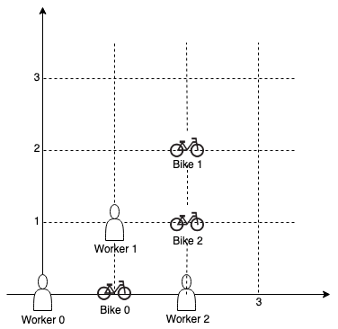

LC 1046 1167 973 179 502 755 1066 - Max or Min Heap
Table of Contents
Last Stone Weight
Link: Last Stone Weight
Problem description
We have a collection of rocks, each rock has a positive integer weight.
Each turn, we choose the two heaviest rocks and smash them together. Suppose the stones have weights x and y with x <= y. The result of this smash is:
- If
x == y, both stones are totally destroyed; - If
x != y, the stone of weightxis totally destroyed, and the stone of weightyhas new weighty-x.
At the end, there is at most 1 stone left. Return the weight of this stone (or 0 if there are no stones left.)
Example 1:
Input: [2,7,4,1,8,1]
Output: 1
Explanation:
We combine 7 and 8 to get 1 so the array converts to [2,4,1,1,1] then,
we combine 2 and 4 to get 2 so the array converts to [2,1,1,1] then,
we combine 2 and 1 to get 1 so the array converts to [1,1,1] then,
we combine 1 and 1 to get 0 so the array converts to [1] then that's the value of last stone.
Note:
1 <= stones.length <= 301 <= stones[i] <= 1000
Method & Code
Use a heap to store the stone weight. Each time poll out 2 largest and add result to heap.
/**
* Use a heap to store each result.
*
* @param stones given stones
* @return weight of this stone (or 0 if there are no stones left)
*/
public int lastStoneWeight(int[] stones) {
PriorityQueue<Integer> h = new PriorityQueue<>(Comparator.reverseOrder());
for (int stone : stones) {
h.add(stone);
}
while (h.size() >= 2) {
int a = h.poll();
int b = h.poll();
if (a != b) {
h.add(a - b);
}
}
return (h.size() == 0) ? 0 : h.poll();
}
Minimum Cost to Connect Sticks
Link: Minimum Cost to Connect Sticks
Problem description
You have some sticks with positive integer lengths.
You can connect any two sticks of lengths X and Y into one stick by paying a cost of X + Y. You perform this action until there is one stick remaining.
Return the minimum cost of connecting all the given sticks into one stick in this way.
Example 1:
Input: sticks = [2,4,3]
Output: 14
Example 2:
Input: sticks = [1,8,3,5]
Output: 30
Constraints:
1 <= sticks.length <= 10^41 <= sticks[i] <= 10^4
Method & Code
Each time, add two smallest sticks in array and add them back. Therefore, use heap to store and poll two of them each time until heap size is smaller than 2.
/**
* Each time, add two smallest sticks in array and add them back.
* Therefore, use heap to store and poll two of them each time until heap size is smaller than 2.
*
* @param sticks given array
* @return minimum cost of connecting all the given sticks into one stick in this way
*/
public int connectSticks(int[] sticks) {
if (sticks.length == 1) {
return 0;
}
PriorityQueue<Integer> q = new PriorityQueue<>();
for (int i : sticks) {
q.add(i);
}
int total = 0;
while (q.size() > 1) {
int a = q.poll();
int b = q.poll();
total += a + b;
q.add(a + b);
}
return total;
}
K Closest Points to Origin
Link: K Closest Points to Origin
Problem description
We have a list of points on the plane. Find the K closest points to the origin (0, 0).
(Here, the distance between two points on a plane is the Euclidean distance.)
You may return the answer in any order. The answer is guaranteed to be unique (except for the order that it is in.)
Example 1:
Input: points = [[1,3],[-2,2]], K = 1
Output: [[-2,2]]
Explanation:
The distance between (1, 3) and the origin is sqrt(10).
The distance between (-2, 2) and the origin is sqrt(8).
Since sqrt(8) < sqrt(10), (-2, 2) is closer to the origin.
We only want the closest K = 1 points from the origin, so the answer is just [[-2,2]].
Example 2:
Input: points = [[3,3],[5,-1],[-2,4]], K = 2
Output: [[3,3],[-2,4]]
(The answer [[-2,4],[3,3]] would also be accepted.)
Note:
1 <= K <= points.length <= 10000-10000 < points[i][0] < 10000-10000 < points[i][1] < 10000
Method & Code
Use a heap to store K points.
/**
* Use a heap to store K points.
*
* @param points given points list
* @param K K nearest points
* @return K closest points to the origin (0, 0)
*/
public int[][] kClosest(int[][] points, int K) {
PriorityQueue<int[]> q = new PriorityQueue<>(K, new Comparator<int[]>() {
public int compare(int[] a, int[] b) {
return a[0] - b[0];
}
});
for (int i = 0; i < points.length; i++) {
q.add(new int[]{(int) Math.pow(points[i][0], 2) + (int) Math.pow(points[i][1], 2), i});
}
int[][] out = new int[K][2];
for (int i = 0; i < K; i++) {
out[i] = points[q.poll()[1]];
}
return out;
}
Largest Number
Link: Largest Number
Problem description
Given a list of non negative integers, arrange them such that they form the largest number.
Example 1:
Input: [10,2]
Output: "210"
Example 2:
Input: [3,30,34,5,9]
Output: "9534330"
Note: The result may be very large, so you need to return a string instead of an integer.
Method & Code
The principle of comparison is similar to dictionary lexical order.
Only compare first number between two numbers, place larger one at head of result for a largest number. If two numbers have same first digit, then compare second digit with same rule.
Heap
/**
* The principle of comparison is similar to dictionary lexical order.
* Only compare first number between two numbers, place larger one at head of result for a largest number.
* If two numbers have same first digit, then compare second digit with same rule.
*
* @param nums given array
* @return largest number that this array could make up
*/
public String largestNumber(int[] nums) {
/* Corner case */
if (nums == null || nums.length == 0) {
return "";
}
PriorityQueue<String> pq = new PriorityQueue<>((o1, o2) -> {
String s1 = o1 + o2;
String s2 = o2 + o1;
return s2.compareTo(s1);
});
for (int n : nums) {
pq.add(String.valueOf(n)); // convert int to string
}
if (!pq.isEmpty() && pq.peek().charAt(0) == '0') { // if whole array is 0
return "0";
}
StringBuilder sb = new StringBuilder();
while (!pq.isEmpty()) {
sb.append(pq.poll());
}
return sb.toString();
}
Comparator And Sort
/**
* Idea is same, instead using comparator to sort the array instead of use heap.
*
* @param nums given array
* @return largest number that this array could make up
*/
public String largestNumberComparator(int[] nums) {
/* Corner case */
if (nums == null || nums.length == 0) {
return "";
}
String[] num = new String[nums.length];
for (int i = 0; i < nums.length; i++) {
num[i] = String.valueOf(nums[i]); // convert int to string for comparator
}
/* The principle of comparison is similar to dictionary lexical order.
* Only compare first number between two numbers, place larger one at head of result for a largest number.
* If two numbers have same first digit, then compare second digit with same rule. */
Comparator<String> comparator = (str1, str2) -> {
String s1 = str1 + str2;
String s2 = str2 + str1;
return s2.compareTo(s1);
};
Arrays.sort(num, comparator);
if (num[0].charAt(0) == '0') { // if whole array is 0
return "0";
}
StringBuilder sb = new StringBuilder();
for (String s : num) {
sb.append(s);
}
return sb.toString();
}
Pour Water
Link: Pour Water
Problem description
We are given an elevation map, heights[i] representing the height of the terrain at that index. The width at each index is 1. After V units of water fall at index K, how much water is at each index?
Water first drops at index K and rests on top of the highest terrain or water at that index. Then, it flows according to the following rules:
If the droplet would eventually fall by moving left, then move left.
Otherwise, if the droplet would eventually fall by moving right, then move right.
Otherwise, rise at it’s current position.
Here, “eventually fall” means that the droplet will eventually be at a lower level if it moves in that direction. Also, “level” means the height of the terrain plus any water in that column.
We can assume there’s infinitely high terrain on the two sides out of bounds of the array. Also, there could not be partial water being spread out evenly on more than 1 grid block - each unit of water has to be in exactly one block.
Example 1:
Input: heights = [2,1,1,2,1,2,2], V = 4, K = 3
Output: [2,2,2,3,2,2,2]
Explanation:
# #
# #
## # ###
#########
0123456 <- index
The first drop of water lands at index K = 3:
# #
# w #
## # ###
#########
0123456
When moving left or right, the water can only move to the same level or a lower level.
(By level, we mean the total height of the terrain plus any water in that column.)
Since moving left will eventually make it fall, it moves left.
(A droplet "made to fall" means go to a lower height than it was at previously.)
# #
# #
## w# ###
#########
0123456
Since moving left will not make it fall, it stays in place. The next droplet falls:
# #
# w #
## w# ###
#########
0123456
Since the new droplet moving left will eventually make it fall, it moves left.
Notice that the droplet still preferred to move left,
even though it could move right (and moving right makes it fall quicker.)
# #
# w #
## w# ###
#########
0123456
# #
# #
##ww# ###
#########
0123456
After those steps, the third droplet falls.
Since moving left would not eventually make it fall, it tries to move right.
Since moving right would eventually make it fall, it moves right.
# #
# w #
##ww# ###
#########
0123456
# #
# #
##ww#w###
#########
0123456
Finally, the fourth droplet falls.
Since moving left would not eventually make it fall, it tries to move right.
Since moving right would not eventually make it fall, it stays in place:
# #
# w #
##ww#w###
#########
0123456
The final answer is [2,2,2,3,2,2,2]:
#
#######
#######
0123456
Example 2:
Input: heights = [1,2,3,4], V = 2, K = 2
Output: [2,3,3,4]
Explanation:
The last droplet settles at index 1, since moving further left would not cause it to eventually fall to a lower height.
Example 3:
Input: heights = [3,1,3], V = 5, K = 1
Output: [4,4,4]
Note:
heightswill have length in[1, 100]and contain integers in[0, 99].Vwill be in range[0, 2000].Kwill be in range[0, heights.length - 1].
Method & Code
Use two heaps to store position. One store from K - 1 to its left, the other one stores from K + 1 to its right.
Priority:
- Height of index
- Position.
Position is as close as to K as possible, which means left heap keeps right, right heap keeps to left.
Adding water should starts at left part.
/**
* Use two heaps to store position. One store from K - 1 to its left, the other one stores from K + 1 to its right.
* The priority is, first, height of index, then the position.
* Position is as close as to K as possible, which means left heap keeps right, right heap keeps to left.
* Adding water should starts at left part.
*
* @param heights given int array representing the height of the terrain at that index
* @param V # of water drops
* @param K dropping position
* @return water in each index after V units of water fall at index K
*/
public int[] pourWater(int[] heights, int V, int K) {
PriorityQueue<Integer> h1 = new PriorityQueue<>(new Comparator<Integer>() {
@Override
public int compare(Integer i1, Integer i2) {
if (heights[i1] - heights[i2] == 0) {
return i2 - i1;
}
return heights[i1] - heights[i2];
}
});
PriorityQueue<Integer> h2 = new PriorityQueue<>(new Comparator<Integer>() {
@Override
public int compare(Integer i1, Integer i2) {
if (heights[i1] - heights[i2] == 0) {
return i1 - i2;
}
return heights[i1] - heights[i2];
}
});
int left = K - 1, right = K + 1, index;
for (int i = 0; i < V; i++) {
while (left >= 0 && heights[left] <= heights[left + 1]) {
h1.add(left--);
}
while (right < heights.length && heights[right] <= heights[right - 1]) {
h2.add(right++);
}
if (!h1.isEmpty() && heights[h1.peek()] < heights[K]) { // left first
index = h1.poll();
heights[index]++;
h1.add(index);
} else if (!h2.isEmpty() && heights[h2.peek()] < heights[K]) {
index = h2.poll();
heights[index]++;
h2.add(index);
} else {
heights[K]++;
}
}
return heights;
}
Campus Bikes
Link: Campus Bikes
Problem description
On a campus represented as a 2D grid, there are N workers and M bikes, with N <= M. Each worker and bike is a 2D coordinate on this grid.
Our goal is to assign a bike to each worker. Among the available bikes and workers, we choose the (worker, bike) pair with the shortest Manhattan distance between each other, and assign the bike to that worker. (If there are multiple (worker, bike) pairs with the same shortest Manhattan distance, we choose the pair with the smallest worker index; if there are multiple ways to do that, we choose the pair with the smallest bike index). We repeat this process until there are no available workers.
The Manhattan distance between two points p1 and p2 is Manhattan(p1, p2) = |p1.x - p2.x| + |p1.y - p2.y|.
Return a vector ans of length N, where ans[i] is the index (0-indexed) of the bike that the i-th worker is assigned to.
Example 1:

Input: workers = [[0,0],[2,1]], bikes = [[1,2],[3,3]]
Output: [1,0]
Explanation:
Worker 1 grabs Bike 0 as they are closest (without ties), and Worker 0 is assigned Bike 1. So the output is [1, 0].
Example 2:

Input: workers = [[0,0],[1,1],[2,0]], bikes = [[1,0],[2,2],[2,1]]
Output: [0,2,1]
Explanation:
Worker 0 grabs Bike 0 at first. Worker 1 and Worker 2 share the same distance to Bike 2, thus Worker 1 is assigned to Bike 2, and Worker 2 will take Bike 1. So the output is [0,2,1].
Note:
0 <= workers[i][j], bikes[i][j] < 1000- All worker and bike locations are distinct.
1 <= workers.length <= bikes.length <= 1000
Method & Code
Use a heap with modified comparator to store the distance-worker-bike pair.
/**
* Use a heap with modified comparator to store the distance-worker-bike pair.
*
* @param workers given workers array
* @param bikes given bikes
* @return minimum possible sum of Manhattan distances between each worker and their assigned bike
*/
public int[] assignBikes(int[][] workers, int[][] bikes) {
PriorityQueue<int[]> q = new PriorityQueue<>((a, b) -> {
int compare = Integer.compare(a[0], b[0]); // compare distance
if (compare == 0) { // if distance is same
if (a[1] == b[1]) { // worker has smaller # has higher priority
return Integer.compare(a[2], b[2]); // otherwise bike has smaller # has higher priority
}
return Integer.compare(a[1], b[1]);
}
return compare;
});
for (int i = 0; i < workers.length; i++) {
int[] w = workers[i];
for (int j = 0; j < bikes.length; j++) {
int[] b = bikes[j];
q.add(new int[]{Math.abs(w[0] - b[0]) + Math.abs(w[1] - b[1]), i, j}); // add each worker to each bike's distance
}
}
int[] out = new int[workers.length];
Arrays.fill(out, -1);
Set<Integer> s = new HashSet<>();
while (s.size() < out.length && !q.isEmpty()) {
int[] arr = q.poll();
if (out[arr[1]] == -1 && !s.contains(arr[2])) { // if the worker has not assigned a bike
out[arr[1]] = arr[2];
s.add(arr[2]);
}
}
return out;
}